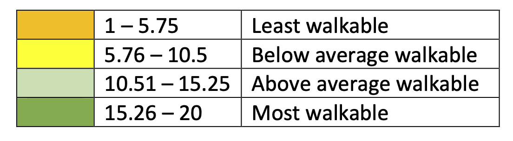
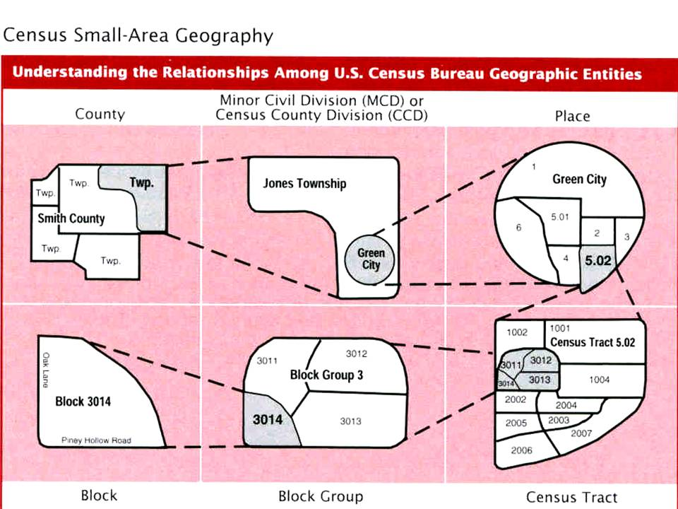

walkability_index
The National walkability index
The National Walkability Index is a nationwide geographic data resource that ranks block groups according to their relative walkability. The national dataset includes walkability scores for all US Census block groups as well as the underlying attributes that are used to rank the block groups.
The index was developed using selected variables on density, diversity of land uses, and proximity to transit from the Smart Location Database.
Here is the user guide of this index: https://www.epa.gov/sites/default/files/2021-06/documents/national_walkability_index_methodology_and_user_guide_june2021.pdf
The index range from 1 to 20, where 1 is the least walkable and 20 the most walkable.
Here are four main categories:
- Least walkable: 1 -5.75
- Below average: 5.76 - 10.5
- Above average: 10.51 - 15.25
- Most walkable: 15.26 - 20

US Census geometries

Data Analysis
From your database folder in the bren-eds213-data repository, run:
duckb -ui walkability.duck.dbWhat did just happened?!
To conduct our analysis we are going to use the spatial and httfs DuckDB extensions:
-- INSTALL spatial;
LOAD spatial;
-- INSTALL httpfs;
LOAD httpfs;Let’s see how fast we can import those data from parquet for the Santa Barabara county:
SELECT GEOID10, STATEFP, COUNTYFP, TRACTCE, BLKGRPCE, CBSA, CBSA_Name, TotPop, NatWalkInd, geom
FROM read_parquet('/courses/EDS213/data/walkability/walkability84_hive/**/*.parquet', hive_partitioning=true)
WHERE STATEFP = '06' AND COUNTYFP = '083';OK before we bet started in doing analaysis, we can store those data as a View:
CREATE OR REPLACE VIEW SB_data AS (
SELECT GEOID10, STATEFP, COUNTYFP, TRACTCE, BLKGRPCE, CBSA, CBSA_Name, TotPop, NatWalkInd, geom
FROM read_parquet('/courses/EDS213/data/walkability/walkability84_hive/**/*.parquet', hive_partitioning=true)
WHERE STATEFP = '06' AND COUNTYFP = '083'
);Let’s compute the average walkbility index per Census tract:
SELECT
TRACTCE,
COUNT(*) AS Block_count,
AVG(NatWalkInd) AS Walk_ind_avg
FROM SB_data
GROUP BY TRACTCE
ORDER BY Walk_ind_avg DESC;Since we have geospatial data, we can also do some spatial aggregagtion!
-- actually since we have the geometry information, we can also compute the average area of teh blocks within a specific tract:
-- We need first to install and load the spatial extension of DuckDB:
SELECT
TRACTCE,
COUNT(*) AS Block_count,
AVG(ST_Area(geom)) AS Avg_area,
AVG(NatWalkInd) AS Walk_ind_avg
FROM SB_data
GROUP BY TRACTCE
ORDER BY Walk_ind_avg DESC;Why is the area so small!? It is in degree because we are using the WGS84 coordinate reference system. We can also reproject: st_transform(geom, 'EPSG:4326', 'ESRI:102039')
Where is it walkable?
--- Is SB Mission walkable?
SELECT * FROM SB_data
WHERE ST_Within(st_point(-119.712, 34.438), geom);Note the Lat/long inversion compared to Google maps!
Using a remote file
We could also read the data via a web server!!
--- Try remote
-- Let's select the data for Santa Barbara County and subset only a few columns;
SELECT GEOID10, STATEFP, COUNTYFP, TRACTCE, BLKGRPCE, CBSA, CBSA_Name, TotPop, NatWalkInd FROM read_parquet('https://apps.bren.ucsb.edu/eds213-data/walkability/walkability_wgs84.parquet')
WHERE STATEFP = '06' AND COUNTYFP = '083';Dataset preparation
The walkability index came as an ESRI geodatabase. The spatial extension can directly read this file format:
-- INSTALL spatial;
LOAD spatial;
-- INSTALL httpfs;
LOAD httpfs;
-- Let's have a look at the data
SELECT * FROM ST_Read(Natl_WI.gdb) LIMIT 10;
-- Save it as a table
DROP TABLE walk84;
CREATE TABLE walk84 AS (
SELECT * EXCLUDE (Shape),
Shape AS geometry,
ST_Hilbert(
Shape,
ST_Extent(ST_MakeEnvelope(-125.00, 24.39, -66.93, 49.38))
) AS bbox_geom
FROM ST_Read(Natl_WI.gdb)
ORDER BY bbox_geom
);
-- See if the table looks good
SELECT * FROM walk84 LIMIT 10;
--- Export to one large parquet file
COPY walk84 TO 'walkability_wgs84.parquet' (FORMAT parquet);
-- Export to parquet files using hive partitioning on state and county FIPS
COPY(
SELECT *
FROM walk84
)
TO 'walkability_hive'
(FORMAT 'parquet', COMPRESSION 'zstd', PARTITION_BY (STATEFP, COUNTYFP));
-- Let's try an analysis: Let's compute the number of block and their average area per tract for the states of CA, NV, OR, WA
-- Sate FIPS: https://www.bls.gov/respondents/mwr/electronic-data-interchange/appendix-d-usps-state-abbreviations-and-fips-codes.htm
-- Adapted from https://medium.com/center-for-coastal-climate-resilience-visualizatio/optimal-geoparquet-partitioning-strategy-33331874ef6c
SELECT
STATEFP,
TRACTCE,
COUNT(*) AS block_count,
AVG(ST_Area(geometry)) AS avg_area
FROM walk84
WHERE STATEFP IN ('06', '32', '41', '53')
GROUP BY TRACTCE, STATEFP
ORDER BY block_count DESC;